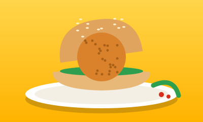
वडा पावVada pav
A spiced potato fritter in a soft bun with dry garlic chutney. Mumbai’s fastest meal.
City guide · Mumbai
A pocket guide to Mumbai’s best bites, must-see places and the local trains that connect them all.
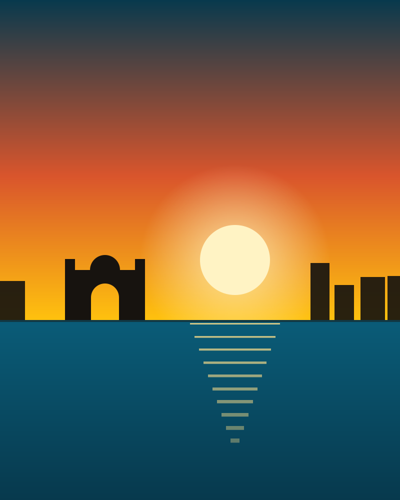
Eat
Most of these cost very little and are sold from stalls, small cafés and carts near any station.

वडा पावA spiced potato fritter in a soft bun with dry garlic chutney. Mumbai’s fastest meal.
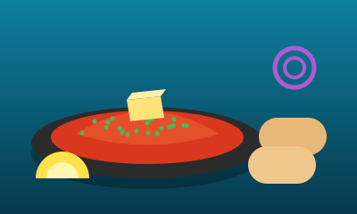
पाव भाजीMashed buttery vegetables cooked on a flat griddle, served with toasted buns, onion and lemon.
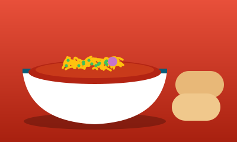
मिसळ पावSprouted-bean curry topped with farsan and onion, with a spicy rassa on the side. A Maharashtrian classic.
Puffed rice tossed with sev, chutneys and chopped onion. Best eaten fresh, by the sea.
A soft bun split and generously buttered, made for dipping in hot tea.
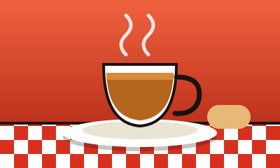
इराणी चहाMilky, sweet and slow-brewed, served in the old Irani cafés with their bentwood chairs.
Places
From the sea-facing Gateway to a forest inside the city, these six are easy to reach by train, bus or ferry.
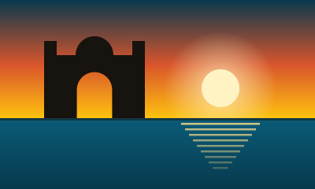
गेटवे ऑफ इंडियाA basalt arch on the Colaba waterfront, completed in 1924. Go early for calm light and fewer crowds.
Ferries to Elephanta leave from nearby.
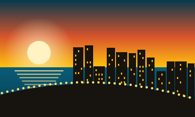
मरीन ड्राइव्हA curved seafront promenade, nicknamed the Queen’s Necklace for its lights after dark.
Best at sunset.
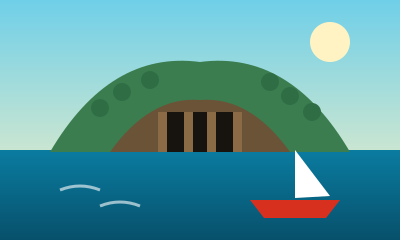
एलिफंटा लेणीRock-cut cave temples on an island in the harbour, a UNESCO World Heritage Site reached by ferry.
Ferry timings depend on weather.
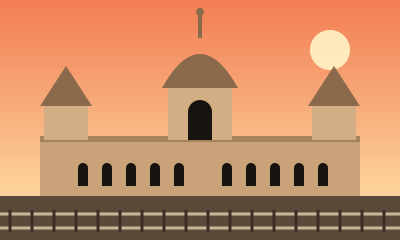
सीएसएमटीThe Victorian Gothic railway terminus once called Victoria Terminus, also a UNESCO World Heritage Site.
Look up from the main hall.
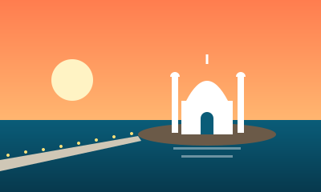
हाजी अलीA shrine on a small islet off Worli, linked to the shore by a long causeway.
The causeway can flood at high tide.
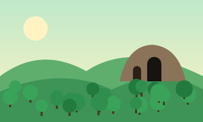
संजय गांधी उद्यानA large forest inside the city at Borivali, home to the ancient Kanheri Caves.
Wear comfortable shoes.
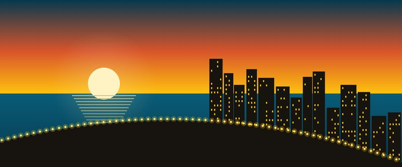
Getting around
Mumbai is long and narrow, so the right ride depends on where you are headed.
The fastest way up and down the city. Runs from early morning to past midnight.
A growing network that helps you cross the suburbs.
Red city buses reach almost every road, including the island city.
Metered black-and-yellow taxis, common in South Mumbai. Ask for the meter.
Boats leave the Gateway of India for Elephanta Island.
Handy in the suburbs. They are not allowed in South Mumbai.
Local trains
Mumbai’s suburban network carries millions of people every day. Learn these three and you can reach almost anywhere.
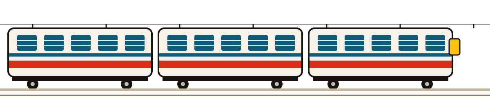
| Line | Starts at | Heads towards | Handy for |
|---|---|---|---|
| Western | Churchgate | Bandra, Andheri, Borivali, Virar | Marine Drive, Bandra, the airport area |
| Central | CSMT | Dadar, Kurla, Thane, Kalyan | Heritage CSMT, Dadar markets, Thane |
| Harbour | CSMT | Wadala, Vashi, Panvel | Navi Mumbai |
One-day plan
Start slowly at an old Irani café.
Travel off-peak, then admire the station building.
Stroll through the heritage streets of the Fort area.
Pick a busy place. A queue is a good sign.
Sit on the sea wall and watch the lights come on.